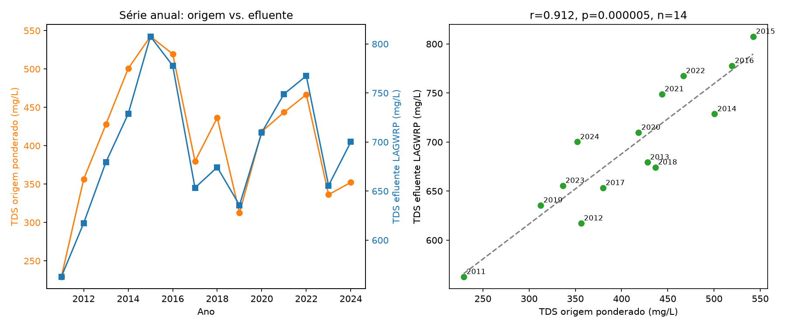
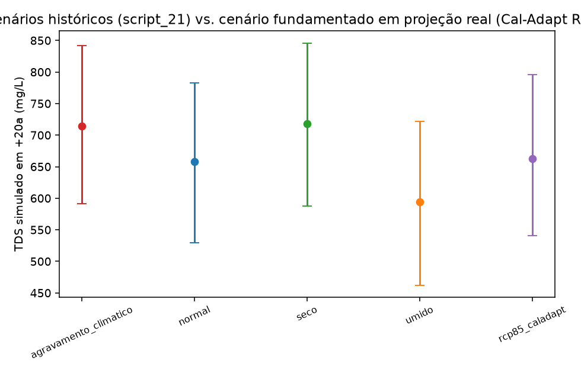
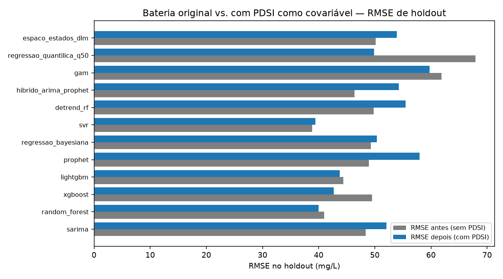
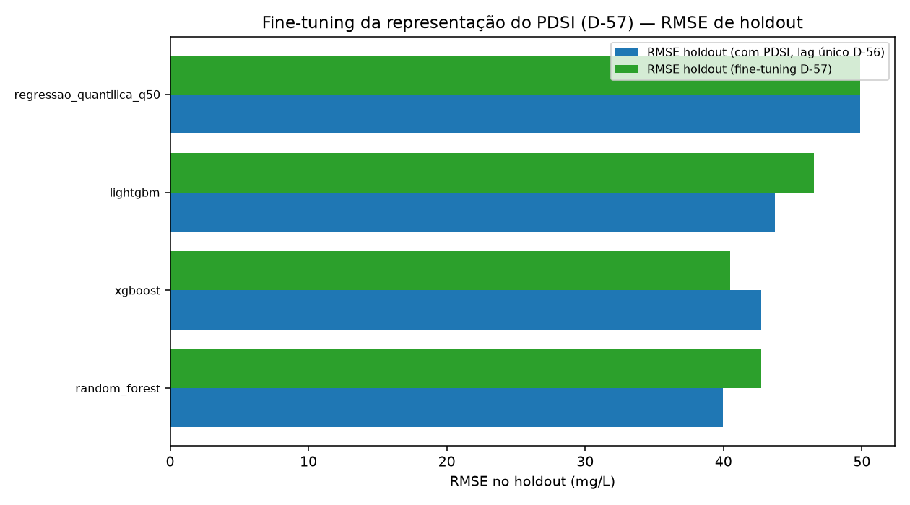
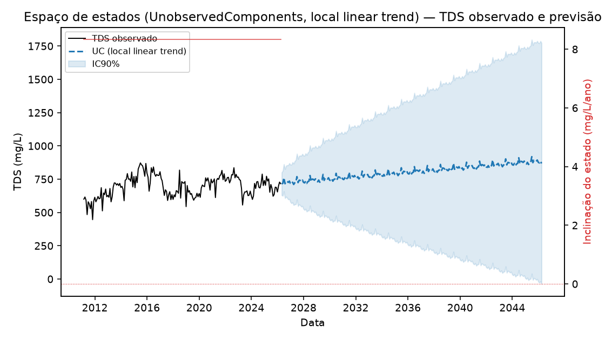
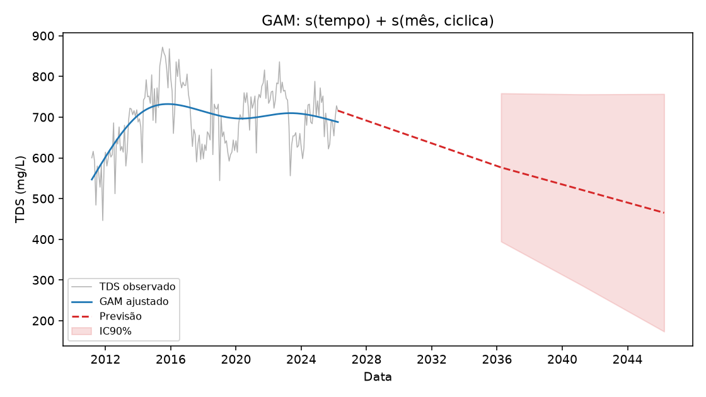
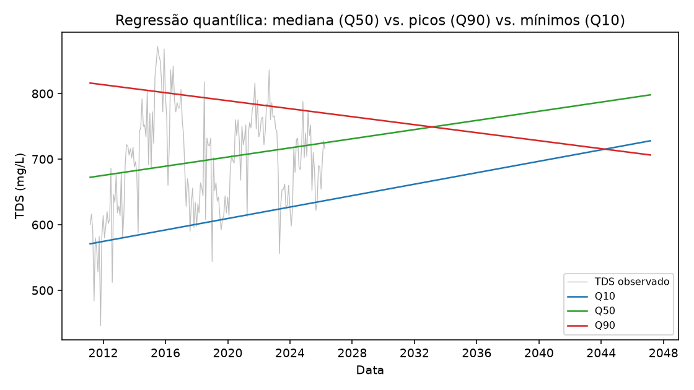
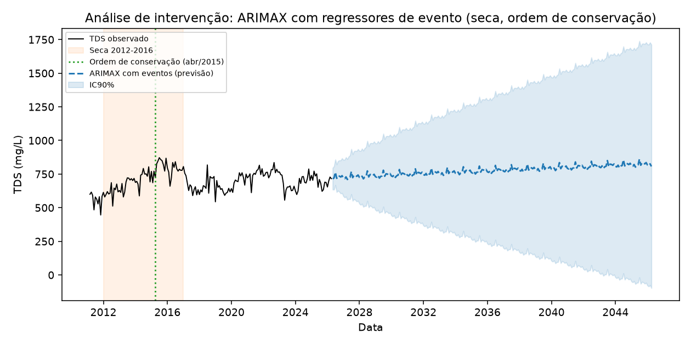
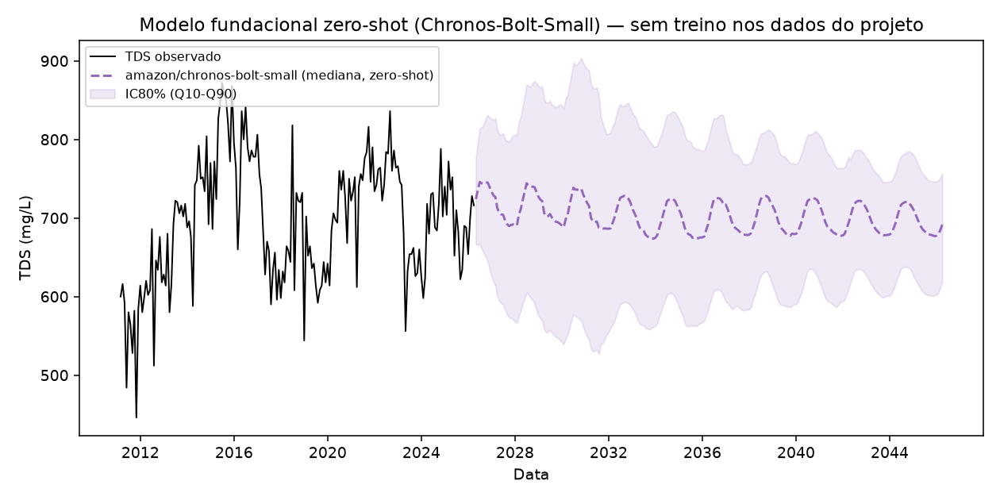

Objetivo desta lição, deliberadamente mais leve que as anteriores: saber que cada um destes métodos existe, o que ele testou, e o resultado em uma frase — o suficiente para responder sem gaguejar, não para defender em profundidade. Nenhum destes muda os finalistas ou a conclusão central (Lições 0001-0008).
Pré-requisito: Lição 0008 — Objetivos secundários. Fonte: resultados.tex, Seções "Métodos adicionais" finais; DECISOES.md, D-45 a D-57.





Mais detalhe: ficha completa.

Mais detalhe: ficha completa.

Mais detalhe: ficha completa.

Mais detalhe: ficha completa.

Mais detalhe: ficha completa.
| Método | Resultado em 1 frase |
|---|---|
| Espaço de estados | Sem tendência variável genuína; IC mais largo de todos. |
| GAM | Explode sem piso de suavização; com piso, prevê leve queda. |
| Regressão quantílica | Picos (Q90) caem, não sobem — oposto à hipótese do projeto. |
| ARIMAX intervenção | Nem seca nem ordem de conservação atingem significância isolada clara. |
| Modelo fundacional (Chronos) | Não supera o naive, como esperado antes do teste. |